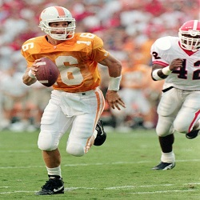
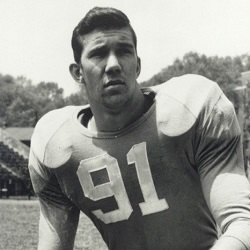
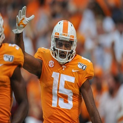
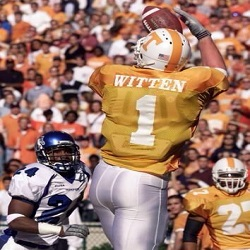
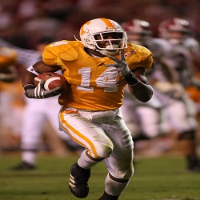
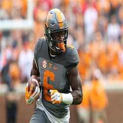
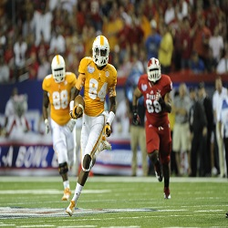

This page displays a handful of the most famous and some of my personal favorite players to play for Tennessee.
 Peyton Manning- Quarterback

 Doug Atkins- Defensive End
 Jauan Jennnings- Wide Reciever
 Jason Witten- Tight End
 Eric Berry- Saftey
 Alvin Kamara- Running Back
 Cordarrelle Patterson- Return Specialist